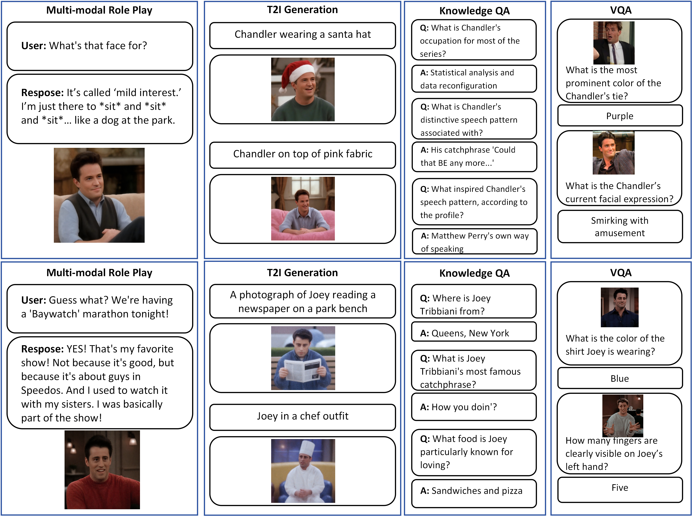

Towards Customized Multimodal Role-Play
Abstract
Unified multimodal understanding and generation models enable richer human-AI interaction. Yet jointly customizing a character's persona, dialogue style, and visual identity while maintaining output consistency across modalities remains largely unexplored. To mitigate this gap, we introduce a new task, Customized Multimodal Role-Play (CMRP). We construct the RoleScape-20 dataset comprising 20 characters, including training and evaluation data that cover persona, stylistic descriptions, visual/expressive cues, and text–image interactions. Building on a unified model, we devise UniCharacter, a two-stage training framework containing unified supervised finetuning (Unified-SFT) and character-specific group relative policy optimization (Character-GRPO). Given only 10 images plus corresponding interaction examples, the model acquires the target character and exhibits coherent persona, style, and visual identity in both generated text and images. This process takes about 100 GPU hours. Experiments on the RoleScape-20 dataset show that the proposed method substantially outperforms prior approaches. Ablation studies further validate the effectiveness of our cross-modal consistency design and few-shot customization strategy. We argue that CMRP, coupled with unified modeling, provides a basis for next-generation characterful and immersive interactive agents. All code and models will be publicly available.
Data Overview
RoleScape-20 contains 9 human characters, 4 animal characters, and 7 anime characters.

Data Construction
The data construction pipeline processes raw character materials (dialogues, images, profiles) into diverse training data, including multimodal role-play dialogues, Knowledge QA, and VQA pairs.

Model Architecture
Stage 1 focuses on Unified-SFT, using MSE loss for image outputs and CE loss for text outputs. Stage 2 implements Character-GRPO, optimizing the policy \(\pi_{\theta}\) via a multi-reward mechanism that considers both text-image alignment and generation diversity.
Gallery
Below are some qualitative results. For more results, please refer to the supplementary material in More Qualitative Results .

BibTeX
@article{Tang2025CustomizedRolePlay,
title={Towards Customized Multimodal Role-Play},
author={Chao Tang and Jianzong Wu and Qingyu Shi and Ye Tian and Aixi Zhang and Hao Jiang and Jiangning Zhang and Yunhai Tong},
}